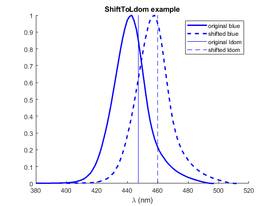

ShiftToLdom
Navigate to: Home | Alphabetic list | Grouped list Source code: ShiftToLdom.m
Shifts the wavelength array of a spectrum such that the desired dominant wavelength results.
Contents
Syntax
[spec_out, delta_lam] = ShiftToLdom(spec_in, ldom)
Input Arguments
- spec_in: struct, a valid spectrum (see design decisions for requirements). The spectrum whose wavelength shall be shifted
- ldom: scalar double. The target dominant wavelength in nm. Must be >= 400 and <= 695
Output Arguments
- spec_out: struct, a valid spectrum. Same val as the input spectrum, but a constant shift has been added to lam in order to achieve the desired dominant wavelength.
Algorithm
Iteratively applies a candidate shift, computes the resulting dominant wavelength, and adjusts the candidate shift until agreement is reached within roundoff error. See LDomPurity for definition of dominant wavelength.
See also
Usage Example
function ExampleShiftToLdom() blue = ReadLightToolsSpectrumFile('blue.sre'); blueLdom = LDomPurity(blue); newLdom = 460; delta_ldom = newLdom - blueLdom; [shiftedBlue, delta_lam] = ShiftToLdom(blue, newLdom); fprintf('original ldom = %g, new ldom = %g\n',blueLdom, newLdom); fprintf('ldom shift = %g achieved by wavelength shift = %g\n',delta_ldom, delta_lam); figure(); hold on; plot(blue.lam, blue.val,'b','LineWidth',2); plot(shiftedBlue.lam, shiftedBlue.val,'b--','LineWidth',2); plot([blueLdom, blueLdom],[0,1],'b'); plot([newLdom, newLdom],[0,1],'b--'); legend({'original blue','shifted blue','original ldom', 'shifted ldom'}); xlabel('\lambda (nm)'); title('ShiftToLdom example'); end
original ldom = 447.351, new ldom = 460 ldom shift = 12.6493 achieved by wavelength shift = 21.7199